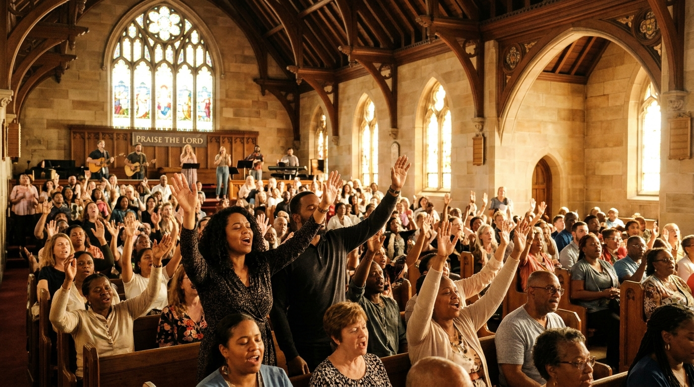
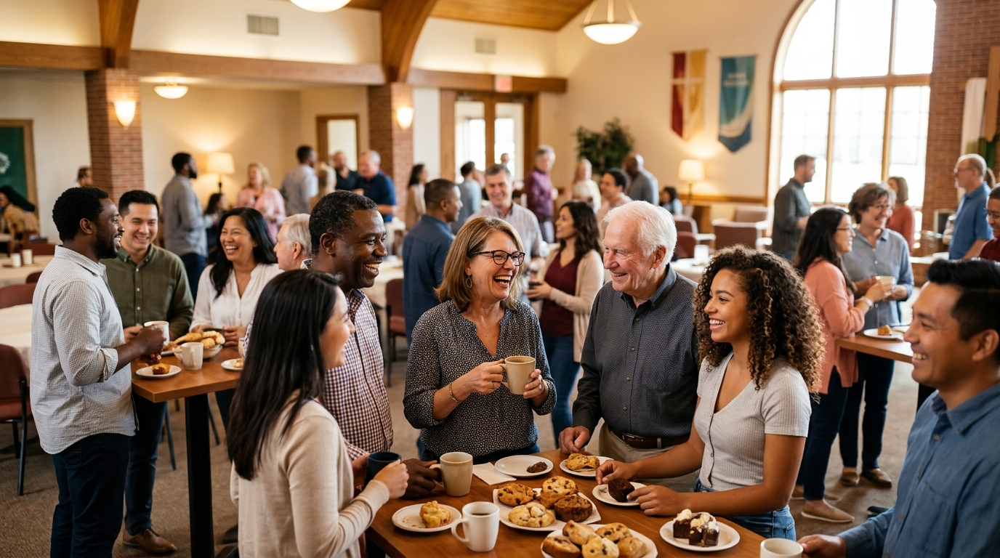

▶
Welcome to Grace Church
A community centered on the teachings of Jesus Christ and the power of the living Word. Growing in faith, sharing God's eternal love, and studying the Holy Scriptures.
Online Bible • పరిశుద్ధ గ్రంథము
Direct AccessRead, navigate, and study all 66 books of the Old and New Testaments in English King James Version (KJV) and standard Telugu (పరిశుద్ధ గ్రంథము) with parallel bilingual reading.
- ✨ King James Version (KJV)
- ✨ తెలుగు పరిశుద్ధ గ్రంథము
- ⚖️ Parallel Bilingual Reading
- 🔍 Scripture Keyword Search
- 🔖 Account-Free Bookmarks
- 📥 Full Offline PWA Capability
Who We Are
About Grace Church
Rooted in Scripture, devoted to Christ, and committed to loving and serving our local and global community.
Our Mission
To proclaim the unchanging truth of the Gospel, foster authentic Christian discipleship, and serve families through active faith, hope, and compassionate outreach.
Our Vision
A thriving, multi-generational body of believers worshipping God in Spirit and Truth, empowering leaders, and bringing Christ's transformation to every home.
Our Core Beliefs
We believe in the Holy Trinity, the infallible authority of the Holy Scriptures, salvation by grace through faith in Jesus Christ, and the power of prayer and fellowship.
Word of God
Sermons & Messages
Listen to uplifting Biblical teachings, expository sermons, and spiritual messages in English and Telugu.
▶
▶
Gatherings & Services
Worship Timings & Events
Join us in person or online for fellowship, Bible study, and vibrant prayer gatherings.
SUN
01
Sunday Morning Worship
WED
04
Midweek Bible Study & Prayer
FRI
06
Youth Fellowship Night
Get Involved
Church Ministries
Find your calling, connect with fellow believers, and grow spiritually through our active ministries.
👶 Kids for Christ (Sunday School)
Nurturing young hearts with scripture memorization, joyful hymns, and creative biblical learning.
🔥 Ignite Youth & Young Adults
Empowering the next generation to stand firm in faith, character, and purposeful Christian leadership.
🌸 Women of Grace Fellowship
Gathering women for intercessory prayer, biblical mentorship, family encouragement, and mutual support.
🛡️ Men's Brotherhood & Prayer Band
Encouraging men to lead with godly integrity in their homes, workplaces, and spiritual walk.
🎵 Zion Voices Choir & Worship
Leading the congregation into deep, Christ-honoring praise and worship every service.
🌍 Community Outreach & Missions
Extending Christ's hands to the needy through food drives, medical camps, and global mission support.
Community Life
Fellowship Moments
Glimpses of worship, prayer, fellowship celebrations, and church community life.

Sunday Morning Praise & Worship
Congregational worship lifting up the name of Jesus Christ.

Community & Family Fellowship
Believers connecting in love, joy, and mutual encouragement.

Church Sanctuary & Campus
A peaceful house of prayer welcoming all individuals and families.

Holy Scripture Devotional Study
Deep biblical discipleship rooted in the eternal Word of God.
Connect With Us
Contact & Prayer Requests
We are here to pray with you, answer questions, and welcome you into our family.
Church Office & Sanctuary
Feel free to reach out anytime or visit our services.
-
Location:
Grace Church & Ministries Sanctuary,
Church Road, Hyderabad, Telangana, India -
Phone & Pastoral Care:
+91 98765 43210 / +91 40 1234 5678 -
Email:
contact@gracechurch.org -
Office Hours:
Tuesday – Saturday: 09:00 AM – 05:00 PM
Submit a Prayer Request
Our pastoral prayer team intercedes for every request submitted.
TITHES & OFFERINGS
Support the Ministry
"Each of you should give what you have decided in your heart to give, not reluctantly or under compulsion, for God loves a cheerful giver."
— 2 Corinthians 9:7
Your faithful contributions support the proclamation of the Gospel, local church ministry, missionary evangelism, and community compassion relief work.